История публикаций
Издатель Marvel Comics
Дебют Amazing Fantasy #15 (август 1962)
Авторы Стэн Ли (сценарист), Стив Дитко (художник)
Характеристики
Полное имя Питер Бенджамин Паркер
Альтер-эго Питер Паркер
Псевдонимы Рикошет, Сумрак, Продиджи, Шершень, Бен Рейли (Алый паук), Дружелюбный сосед
Вид Генетически изменённый человек
Род занятий Супергерой, школьник, студент, учитель, фотограф, научный сотрудник Horizon Labs, в настоящее время глава Parker Industries
Сайт: Перейти на сайт
Навыки
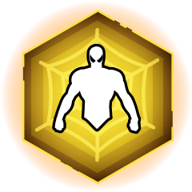
Сила
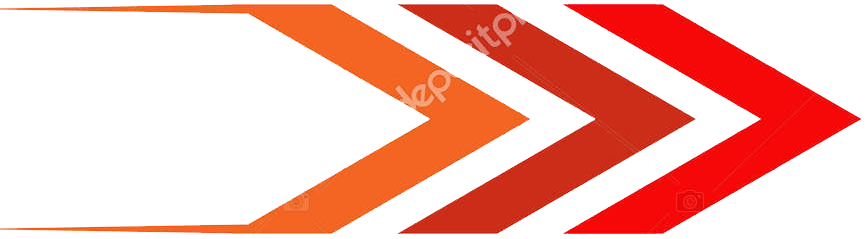
Скорость
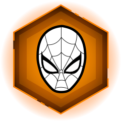
Интеллект
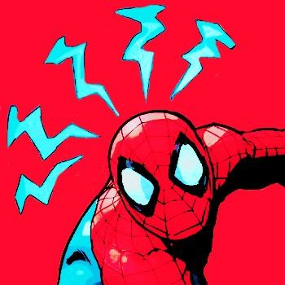
Чутье
Союзники
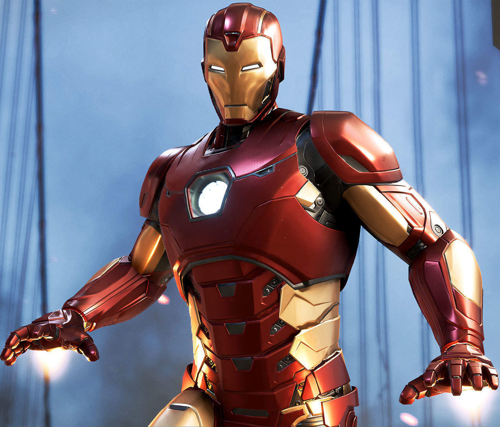
Железный человек
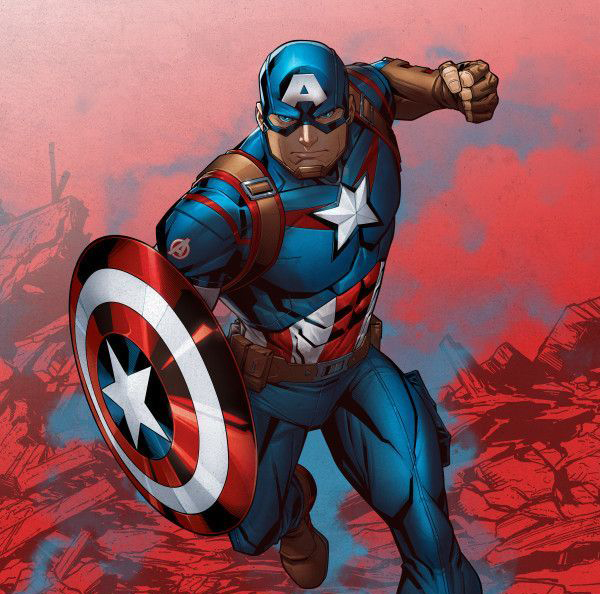
Капитан Америка
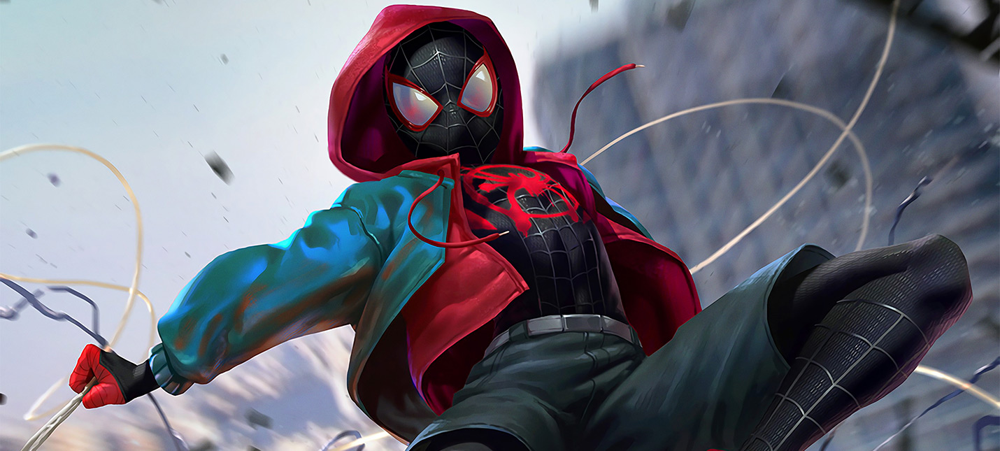
Майлз Моралез
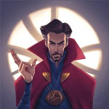
Доктор Стрэндж
Враги
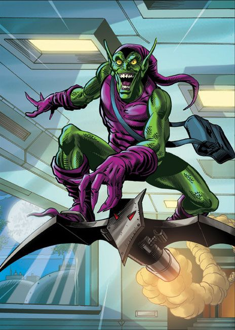
Гоблин
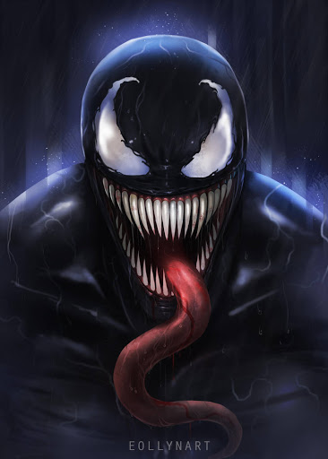
Веном
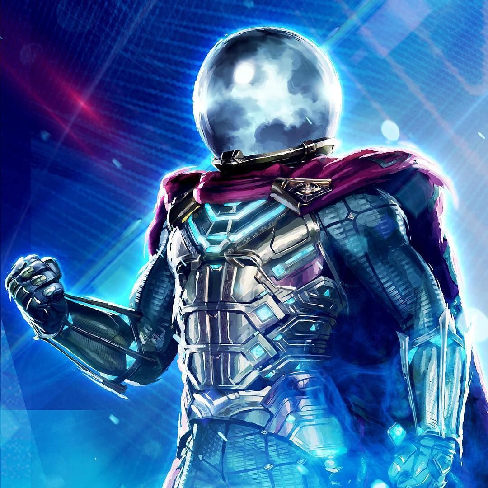
Мистерио

Осьминог
Интересное о комиксах
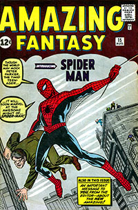
Первый выпуск отдельной серии The Amazing Spider-Man №1 вышел в марте 1963 года, и вскоре
серия
стала самой прибыльной серией Marvel.
Художники: Джек Кёрби и Стив Дитко
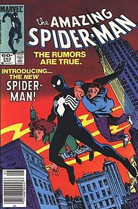
Обложка The Amazing Spider-Man № 252 (май 1984). Дебют Человека-паука в костюме-симбиоте, который позже станет Веномом.